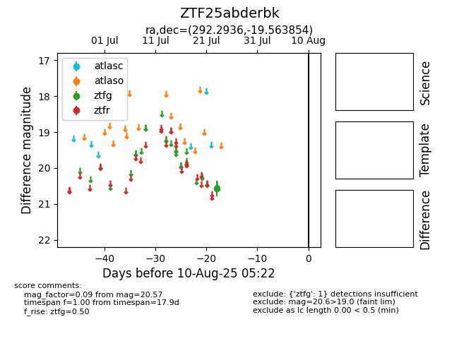

Target ZTF25abderbk at 2025-08-05 23:02, see:
FINK: fink-portal.org/ZTF25abderbk
Lasair: lasair-ztf.lsst.ac.uk/objects/ZTF25abderbk
ALeRCE: alerce.online/object/ZTF25abderbk
alt names
ZTF25abderbk (ztf,fink)
coordinates:
equatorial (ra, dec) = (292.2936,-19.56385)
galactic (l, b) = (19.1739,-16.86686)
photometry
last ztfg=20.57
1 ztfg detections
